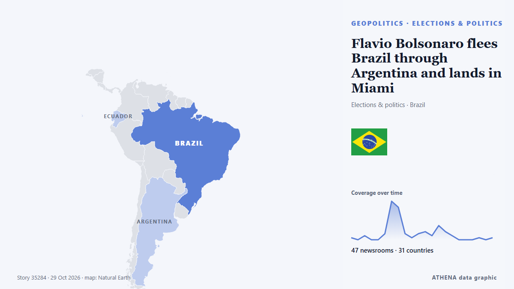

Flavio Bolsonaro flees Brazil through Argentina and lands in Miami

According to a report by Folha de S.Paulo, the politician was dissuaded from seeking to challenge the voting legitimacy by his lawyers and key allies. από TASS (English)
Αναφέρθηκε ανεξάρτητα από 47 μέσα σε 31 χώρες από τις 26 Οκτ, πρώτο από το TASS (English)· η κάλυψη εξασθενεί. Το ATHENA εκτιμά τον κίνδυνο μέτριο (2.1/10), κυρίως λόγω της σοβαρότητας της βλάβης που περιγράφεται και της γεωγραφικής και τομεακής εμβέλειάς του. Η βεβαιότητα είναι 87% (υψηλή), καθώς το επιβεβαιώνουν 47 ανεξάρτητα μέσα με μέση αξιοπιστία πηγών 76%. Ποιοι το ανέφεραν: 5 μέσα στη χώρα Ηνωμένο Βασίλειο · United Kingdom, 3 μέσα στη χώρα Αργεντινή · Argentina, 3 μέσα στη χώρα Βραζιλία · Brazil. Η κάλυψη διήρκεσε από 26 Οκτ έως 27 Οκτ, 24 ώρες.
Γιατί έχει σημασία: Οι εξελίξεις στην ασφάλεια και τη διπλωματία μπορούν να μετατοπίσουν συμμαχίες, εμπόριο και αγορές πολύ πέρα από τις χώρες που εμπλέκονται.
Τι άλλαξε: 15 νέες αναφορές από 15 μέσα στο 24ωρο έως 29 Οκτ.
Πρώτη διατύπωση: Flavio Bolsonaro flees Brazil for US amid investigation — reports
Οι τίτλοι των ειδήσεων παρουσιάζονται στα αγγλικά, όπως δημοσιεύτηκαν.
Με μια ματιά
Επιλέγεται, βαθμολογείται και γράφεται από τη δημοσιευμένη μεθοδολογία του ATHENA. Κανένας συντάκτης δεν παρεμβαίνει σε μεμονωμένα γεγονότα. Πώς παράγεται ›
| 26 Oct 20:54 UTC | 1 |
|---|---|
| 26 Oct 23:54 UTC | 0 |
| 27 Oct 02:54 UTC | 2 |
| 27 Oct 05:54 UTC | 0 |
| 27 Oct 08:54 UTC | 0 |
| 27 Oct 11:54 UTC | 3 |
| 27 Oct 14:54 UTC | 19 |
| 27 Oct 17:54 UTC | 16 |
| 27 Oct 20:54 UTC | 3 |
| 27 Oct 23:54 UTC | 1 |
| 28 Oct 02:54 UTC | 3 |
| 28 Oct 05:54 UTC | 4 |
| 28 Oct 08:54 UTC | 2 |
| 28 Oct 11:54 UTC | 7 |
| 28 Oct 14:54 UTC | 4 |
| 28 Oct 17:54 UTC | 2 |
| 28 Oct 20:54 UTC | 0 |
| 28 Oct 23:54 UTC | 0 |
| 29 Oct 02:54 UTC | 0 |
| 29 Oct 05:54 UTC | 1 |
| 29 Oct 08:54 UTC | 0 |
| 29 Oct 11:54 UTC | 1 |
| 26 Oct 20:59 UTC | 0.0 |
|---|---|
| 27 Oct 16:08 UTC | 1.3 |
| 29 Oct 12:17 UTC | 2.1 |
Γιατί αυτοί οι αριθμοί
Σημασία
Κίνδυνος
Βεβαιότητα
Η κάλυψη — ποιος το ανέφερε και πότε
ο τίτλος όπως δημοσιεύτηκε · ανοίγει το πρωτότυπο- TASS (English) · Ρωσία · RussiaBrazil’s Bolsonaro drops plans of challenging presidential election outcome
- Xinhua (English) — page reader · Κίνα · ChinaFlavio Bolsonaro drops bid to annul Brazil's presidential runoff
- SBS News · Αυστραλία · AustraliaBolsonaro agrees to surrender passports after acknowledging loss in Brazil's presidential race
- Colombia One · Κολομβία · ColombiaFlavio Bolsonaro Reportedly Flees Brazil After Passport Revocation
- Sky News (World) · Ηνωμένο Βασίλειο · United KingdomDefeated Brazilian presidential candidate 'ordered to hand over passports'
- Buenos Aires Times · Αργεντινή · ArgentinaArgentina denies Flávio Bolsonaro has entered the country
- The Straits Times · Σιγκαπούρη · SingaporeFlavio Bolsonaro and family to receive US visas after leaving Brazil: US State Dept
- Club of Mozambique · Μοζαμβίκη · MozambiqueBrazil wonders: Where on earth is Flavio Bolsonaro?
- Euronews English · Γαλλία · FranceFlávio Bolsonaro reportedly leaves Brazil for US after election defeat
- Luxembourg Times · Λουξεμβούργο · LuxembourgFlavio Bolsonaro’s passports cancelled: Brazil police source
- The Guardian · Ηνωμένο Βασίλειο · United KingdomFlávio Bolsonaro flees Brazil after presidential election loss, reports say
- RTÉ News · Ιρλανδία · IrelandUS to issue Bolsonaro visa amid reports he fled Brazil
- The Rio Times · Βραζιλία · BrazilFlávio Bolsonaro Is the Courts’ Next Target
- MercoPress · Ουρουγουάη · UruguayBrazil investigates whether Flávio Bolsonaro left the country via Argentina after his defeat
- France 24 English · Γαλλία · France🔴Brazil's defeated candidate Flavio Bolsonaro heads to US, sources say
- CNA (Channel NewsAsia) · Σιγκαπούρη · SingaporeBrazil's Bolsonaro has passports cancelled as whereabouts unclear
- BBC News · Ηνωμένο Βασίλειο · United KingdomFlávio Bolsonaro's passports cancelled after he fails to surrender them
- The Independent · Ηνωμένο Βασίλειο · United KingdomFlavio Bolsonaro disappears as Brazilian police cancel his passports after shock election defeat
- Agência Brasil (English) · Βραζιλία · BrazilFederal Police revoke Flávio Bolsonaro’s passports
- The Jerusalem Post · Ισραήλ · IsraelFlavio Bolsonaro headed to the US after losing Brazil election, sources say - report
- Buenos Aires Times · Αργεντινή · ArgentinaBrazil cancels Flávio Bolsonaro's passports with whereabouts unclear
- Arab News · Σαουδική Αραβία · Saudi ArabiaBrazil’s Flavio Bolsonaro leaves for US amid passport controversy
- ABC News Australia · Αυστραλία · AustraliaFlávio Bolsonaro flees Brazil 'on plane to US' after election loss
- The Independent · Ηνωμένο Βασίλειο · United KingdomFlavio Bolsonaro arrives in US after Trump gives him visa despite police order to surrender passport
- DW English · Γερμανία · GermanyFlavio Bolsonaro flees Brazil for US amid investigation — reports
- Türkiye Today · Τουρκία · TurkeyBrazil cancels Flavio Bolsonaro’s passports after election loss
- Global News (World) · Καναδάς · CanadaBrazil’s Flávio Bolsonaro misses passport handover, compliance unclear
- CBC News · Καναδάς · CanadaFlávio Bolsonaro and family to receive U.S. visas after leaving Brazil, State Department says
- Agência Brasil (English) · Βραζιλία · BrazilFlávio Bolsonaro fled to US, Reuters reports
- Jamaica Observer · Τζαμάικα · JamaicaBrazil’s Bolsonaro has passports cancelled as whereabouts unclear
- Cyprus Mail · Κύπρος · CyprusBrazil’s Flavio Bolsonaro headed to the US after losing election
- NDTV · Ινδία · IndiaFlavio Bolsonaro Flees Brazil Hours After Losing Presidential Polls: Report
- Anadolu Agency (English) · Τουρκία · TurkeyBrazil's Flavio Bolsonaro reportedly heads to US despite travel ban after election defeat
- Breaking Belize News · Μπελίζ · BelizeInternational News: Bolsonaro reportedly leaves Brazil for US after election defeat
- Daily Maverick · Νότια Αφρική · South AfricaFlavio Bolsonaro headed to the US after losing Brazil election, sources say
- PBS NewsHour · Ηνωμένες Πολιτείες · United StatesBrazil's Flávio Bolsonaro and his family will get U.S. visas after presidential election loss
- The New York Times (World) · Ηνωμένες Πολιτείες · United StatesFlávio Bolsonaro Leaves Brazil for the U.S. After Election Defeat
- Colombia One · Κολομβία · ColombiaMarco Rubio Allegedly Behind Flavio Bolsonaro’s Escape From Brazil
- The Hill · Ηνωμένες Πολιτείες · United StatesState Department to issue visas to Flávio Bolsonaro and family
- Buenos Aires Times · Αργεντινή · ArgentinaReports: Flávio Bolsonaro flees to United States after Brazil election defeat